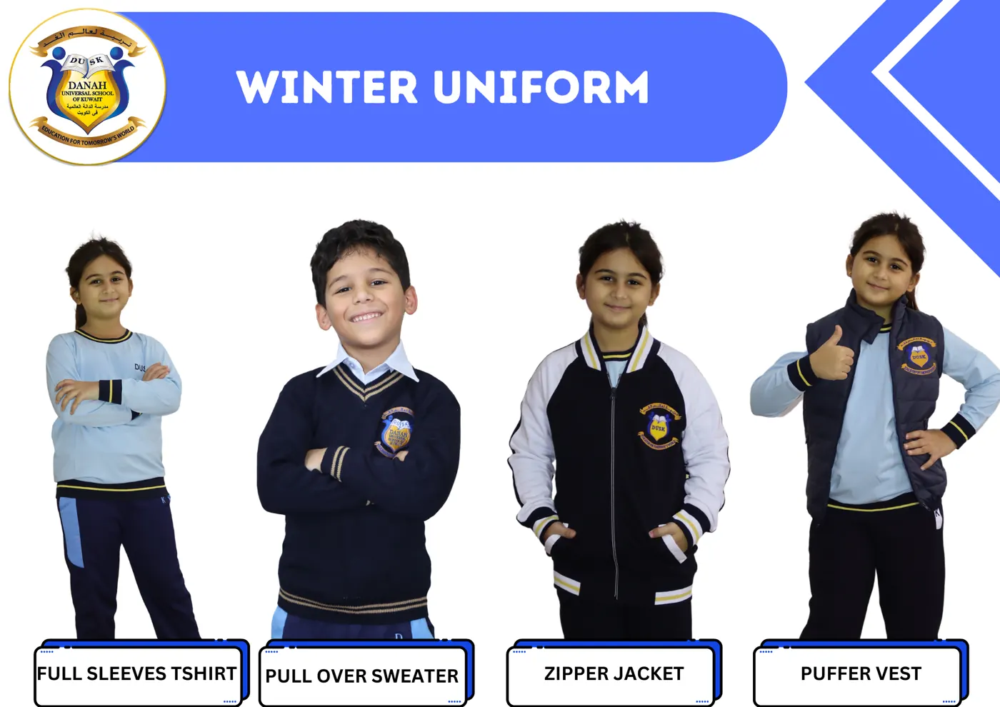

التعليم والمرافق
ماذا يدرس طفلك في الدانة، وكيف نقيّم ونتابع، والخدمات حول اليوم الدراسي: الباص والعيادة والزي المدرسي.

المنهج
الدانة مدرسة أمريكية تتبع معايير Common Core للقراءة والكتابة والرياضيات، ومعايير NGSS للعلوم. لغة التدريس هي الإنجليزية.
العربية جزء من مواد اللغة وتتبع توجيهات وزارة التربية، ومعها التربية الإسلامية. ونُدرّس الفرنسية لغةً أجنبية، إلى جانب الذكاء العاطفي والفنون والحاسوب والموسيقى والروبوتات والتربية البدنية. المدرسة معتمدة من Cognia، ونستخدم اختبارات NWEA MAP لقياس تقدّم الطلاب.

الدرجات والتقارير
يراسل المعلمون أولياء الأمور خلال السنة كلما احتاج الأمر، وتصل تقارير التقدّم الرسمية أربع مرات في السنة. من الصف الثاني إلى الثاني عشر نستخدم التقديرات بالحروف، من A+ (97–100) إلى F.
الرسوب في المواد الإنجليزية 59% فأقل، وفي المواد العربية 49% فأقل حسب الوزارة.

بوابة Edunation
لكل أسرة حساب في Edunation، نظام إدارة التعلّم في المدرسة، وتصل بيانات الدخول ودليل ولي الأمر بالبريد الإلكتروني. من خلالها تتابع الواجبات والدرجات والشهادات الإلكترونية والحضور، والرسوم وتذكيرات الدفع، وتتواصل مع المعلمين.


المرافق
- مسبح بطول 25 متراً
- صالة رياضية داخلية ومسرح
- ملعبان شبه مغطّيين ومساحات للفسحة
- مقصف غداء لكل من الابتدائي والمتوسط والثانوي
- مختبر روبوتات وثلاثة مختبرات حاسوب
- غرفتا فنون وغرفة موسيقى
- مكتبة المدرسة ومعرض الكتاب

الباص المدرسي
باصات المدرسة توصل الطلاب من أمام البيت صباحاً وترجعهم بعد الدوام، في سلوى والمناطق المجاورة. للاشتراك تواصل مع مسؤول النقل عن طريق مكتب المدرسة، مع موقع البيت على الخريطة والعنوان وأرقام التواصل.

العيادة المدرسية
غرفة بسرير واحد مجهّزة بالأكسجين للطوارئ. تقدّم الممرضات الإسعافات الأولية، ويتابعن الطلاب أصحاب الحالات الصحية أو الأدوية. كل سنة يقسن الطول والوزن ويفحصن الأسنان والنظر ويبلّغن الأهل بأي ملاحظة، ويعطين تطعيمات وزارة الصحة لطلاب الصفوف 5 و6 و12.

الزي المدرسي
زي واحد من KG1 إلى الصف 12 بألوان المدرسة الزرقاء وشعار DUSK: قميص أزرق فاتح وبنطلون أو تنورة كحلي، وزي رياضي، وللشتاء جاكيت وبلوفر كحلي وبليزر أزرق.